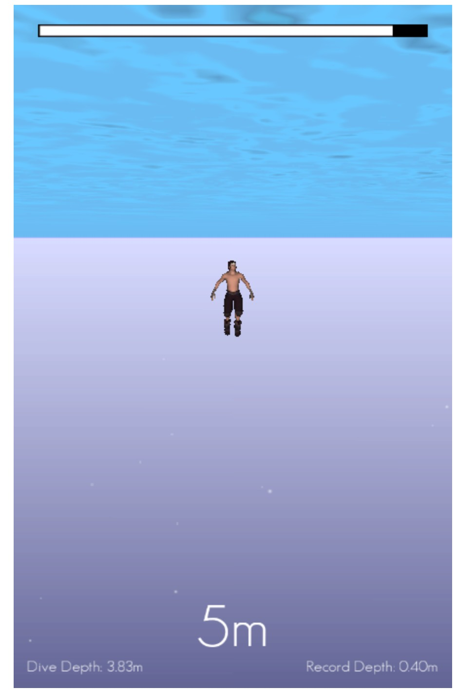

I’ve wanted to make this game for a while. It’s inspired by this video of William Truebridge breaking the unassised free diving depth record. I found it quite evocative and wanted to see if some of that feeling could be conveyed in a simple game.

Browser playable version and Android download links are at the bottom of the page.
Tap the lower half of the screen to swim one ‘stroke’ downwards. The top half for upwards. There is a bit of a knack to the controls, you need to hold for around about a second, then release and quickly start the next stroke before you float up.
The aim is to reach a depth and turn around in time to get to the surface before your oxygen runs out. If you fail to do so your score won’t count.
The idea is that you want to pace your strokes efficiently. Swimming too fast won’t get you any more distance but will make you use more oxygen.
The dude was $15 from the unity store. He’s meant to be a medieval warrior but he came with some swim animations so with some poking around he fit the needs of the game quite well :)
I had some extra ideas to make the game more accurate. You’ll see in the video that William ‘free-falls’ after a certain depth. I haven’t got around to things like depth affecting buouancy properly and the ability to exhale.
I might revisit it at some point.

Beetlefeet